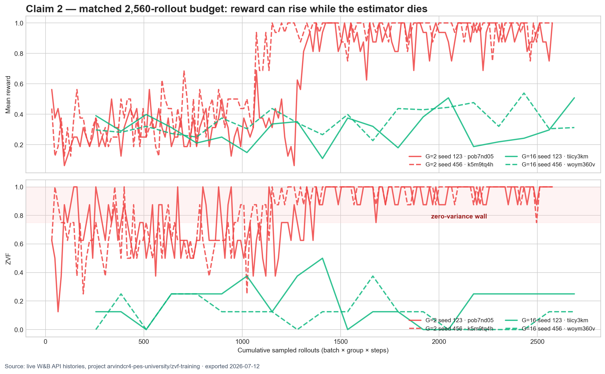
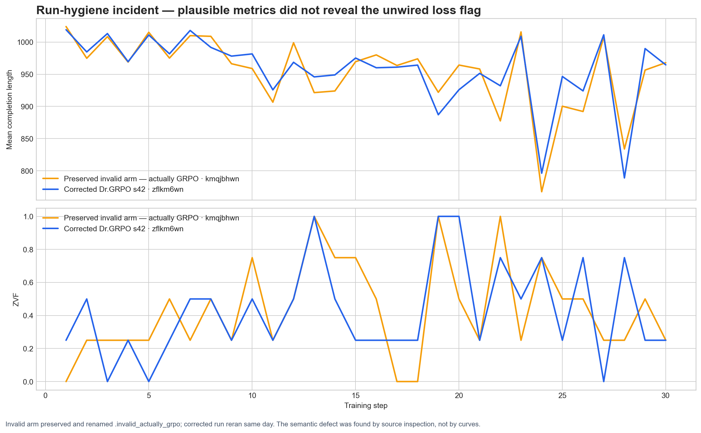

Evidence checks loaded
2,560
matched rollouts per Claim 2 arm
3.8–12.2%
P4 completion-length contraction
983 ≠ 70+
different run-count inclusion rules
Claim 2 — matched-budget G=2 versus G=16
At the same rollout budget, G=2 gets 160 optimizer steps and reaches a high-reward, high-ZVF all-correct wall. G=16 gets 20 optimizer steps and remains mid-learning. This is a two-seed trajectory observation, not a universal optimum.
| Run | G | Seed | Steps | Budget | Late reward | Late ZVF |
|---|

P4 — corrected GRPO versus Dr.GRPO panel
Audited definition: percentage contraction from the first-5 mean completion length to the last-10 mean. Every corrected arm contracts; the exact extrema round to 3.8–12.2%.
| Run | Loss | Seed | First-5 | Last-10 | Contraction | Late ZVF |
|---|
Run hygiene — why 983 and 70+ are both correct
983
all Tinker training-client objects, including evaluation bootstraps, retries, probes, aborted arms, and shared-org activity
70+
curated cross-library telemetry corpus used by the papers
19
claim-critical gold rows in
key_runs
Synthetic ZVF sanity check
The didactic four-group fixture recomputes ZVF=0.5 and gradient utilization=0.5. It demonstrates arithmetic only; it is not a training result.